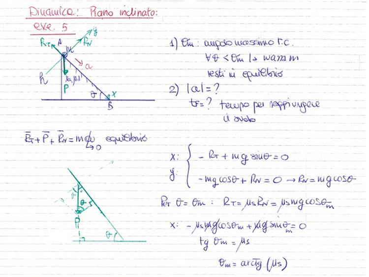
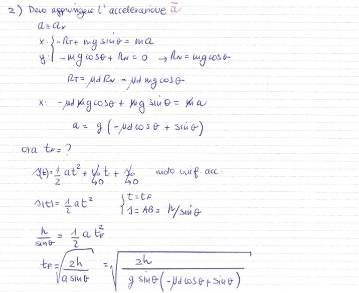

Antonio Pierro @antonio_pierro_
Per consigli, suggerimenti, eventuali errori od altro potete scrivere un email a antonio.pierro[at]gmail.com
Una massa m è sospesa, tramite una fune inestensibile di massa trascurabile e di lunghezza L, ad un punto fisso. L’angolo formato dal filo con la verticale è θ.
Determinare la velocità, in funzione dell’angolo θ, che deve essere impressa alla massa per farla muovere di moto circolare uniforme in un piano orizzontale.
Un corpo di massa m è posto sulla sommità di un piano inclinato a un'altezza h dal suolo, con il quale forma un angolo θ. Il piano è scabro con coefficiente di attrito statico pari a \(\mu_s\) e dinamico pari a \(\mu_d\).

